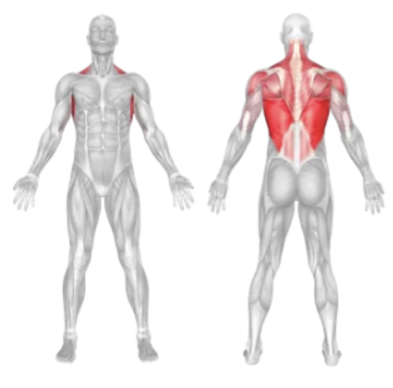
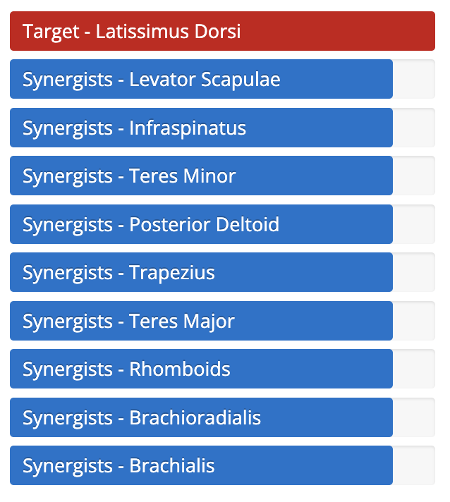

Setup
- Sit on a cable row machine with your feet securely on the foot platform.
- Grasp the handle with both hands (V-bar or wide grip, depending on your target area).
- Keep your back straight, chest lifted, and knees slightly bent.
Execution
- Pull the Handle: Exhale and pull the handle toward your lower abdomen while squeezing your shoulder blades together.
- Pause: Hold the contraction for a second at the peak of the movement.
- Return: Inhale and slowly extend your arms back to the starting position, maintaining tension in your back muscles.
- Repeat for the desired number of repetitions.
Tips for Effectiveness
- Avoid Leaning: Don’t rock your upper body; keep your torso still for maximum back engagement.
- Squeeze the Back: Focus on squeezing your lats and rhomboids as you row.
- Controlled Motion: Use slow, deliberate reps rather than fast or jerky movements.
- Use Proper Grip: Adjust your grip (close or wide) based on which part of the back you want to emphasize.
Benefits of Seated Cable Row
- Back Thickness: Builds thickness in the middle back and lats.
- Improved Posture: Strengthens postural muscles to counteract slouching.
- Joint-Friendly: Low-impact on joints, making it suitable for various fitness levels.
- Versatile: Grip variations allow targeting different muscle groups in the back.
Muscles Worked in Seated Cable Row

